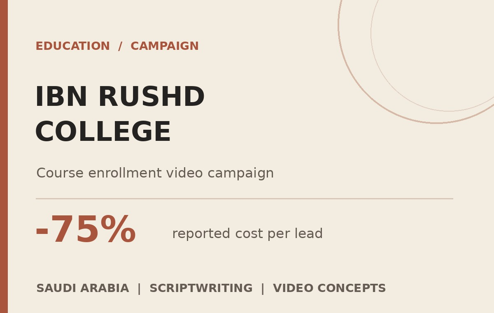
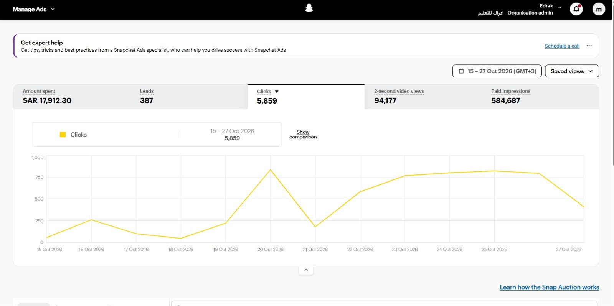
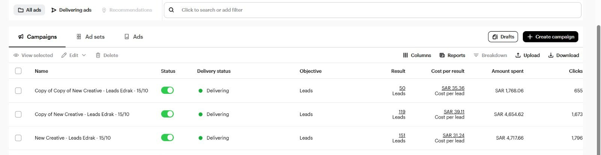
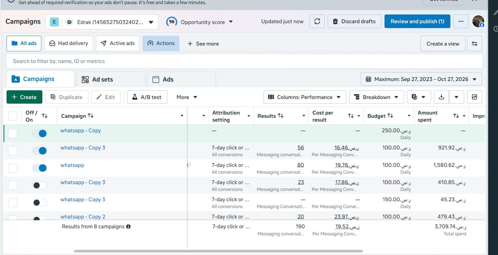

Creating video ideas and scripts to introduce the college's courses and encourage prospective students to enquire.
Video scriptwritingFilming conceptsEditing follow-up

01 / THE BRIEF
Turning courses into stories people want to watch.
I worked on an advertising shoot promoting courses for Ibn Rushd College in Saudi Arabia. The creative goal was to produce clear, engaging videos that could encourage prospective students to take the next step and get in touch.
02 / MY ROLE
From the first idea to the final cut.
I wrote the scripts for all ten campaign videos, developed filming concepts, and followed up on the editing to make sure each piece delivered its message in a way that felt natural and engaging.
03 / REPORTED OUTCOME
Creative work, with measurable response.
The media buyer reported that the cost per lead fell from approximately SAR 100 to SAR 25 after the new video creative was introduced. Below are separate platform-level results captured in campaign dashboards.
75%
Reported decrease in cost per lead (SAR 100 → SAR 25)
387
Snapchat leads · 15–27 Oct 2026
190
Meta messaging conversations · dashboard total
Reporting note: the 75% improvement is attributed to the media buyer's before/after comparison; the screenshots show different platforms, objectives and reporting periods. Snapchat reported 387 leads, 5,859 clicks and SAR 17,912.30 spend for 15–27 October 2026. Meta showed 190 messaging conversations at an average of SAR 19.52 per conversation, not confirmed course sales. The campaign cannot be credited to the videos alone without a controlled comparison.

Snapchat · 15–27 October 2026

Snapchat · three visible lead campaigns

Meta Ads · messaging campaigns
04 / CAMPAIGN VIDEOS
Watch the work.
Explore the ten campaign videos, including two UGC-style pieces. Each video opens in Google Drive.